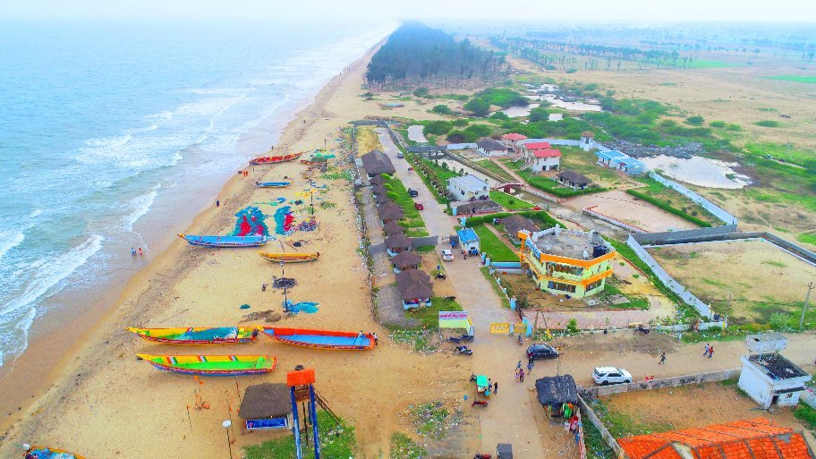
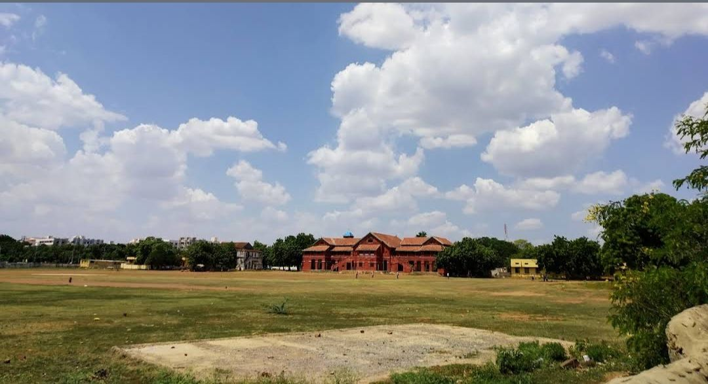
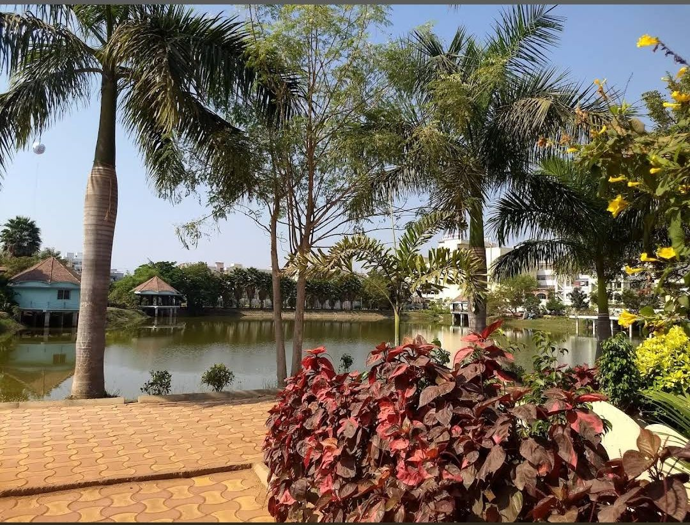
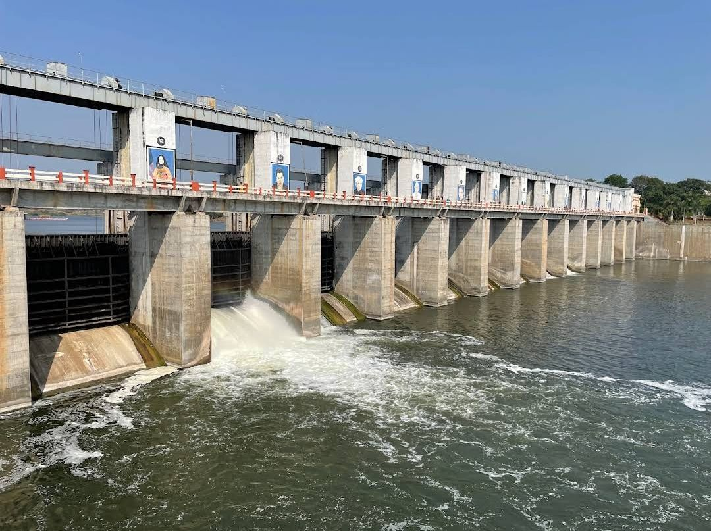

Ongole, the largest of all cities in Prakasam district, is a blend of various cultures. The ancient city has a rich heritage as is evident from the fact that it was mentioned in the inscriptions belonging to the 3rd century when it was ruled by the Pallavas. A busy town in modern times, the place is famous for dairy products, pulses, pepper, cereals and groundnut. The place has stunning beaches and ancient temples to boast of and let us have a look at the top 4 places to visit in Ongole.
| Place | Name | About | Location |
|---|---|---|---|
|  | Kothapatnam beach | Kothapatnam is a small costal village in Prakasam district of the Indian state of Andhra Pradesh. It is located in Kothapatnam mandal in Ongole revenue division.Kothapatnam Beach is one amongst the top attractions in Ongole. Located 18 km from the city, the beach is a great source of entertainment for local people and tourists. | Go to View |
|  | ABM Ground | College is one of the prestigious institutes; located in Ongole, Andhra Pradesh. Established in 1981, the institute offers Degree courses with UG programs. Quality education is provided through these programs in Full-Time mode. | Go to View |
|  | Gandhi Park | Gandhi Park is a green space offering a peaceful environment for visitors. With well-maintained gardens, walking paths,it provides a pleasant escape for relaxation and reflection. | Go to View |
|  | Gundlakamma Reservoir | The Gundla Kamma project was built on the Gundlalam river at 80 feet high at Mallavaram with a storage capacity of 12.845 tmns. The project aims to provide 62,368 acres in Kharif and 80.060 acres in Rabi with Rs. The project was constructed with 592 crores. | Go to View |